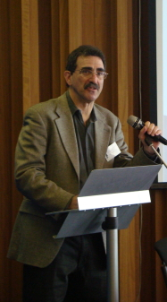

|
 |
AN INTERDISCIPLINARY APPROACH TO THE TEACHING OF ABNORMAL PSYCHOLOGY: RATIONALE, ADVANTAGES AND CHALLENGESAnecdotal reports suggest that an emphasis on interdisciplinary links in the teaching of psychology courses can enhance students’ overall learning experiences (e.g., Widner et al., 2007). Emphasis on interdisciplinary aspects of abnormal psychology could be especially advantageous in efforts to adapt and teach psychopathology courses in diverse international and other varied demographical settings, since this emphasis can counteract tendencies towards ethnocentrism and scientism in many abnormal psychology course materials. In this presentation, I report on my experiences teaching Abnormal Psychology at the University of Michigan utilizing a method in which links between the field of psychopathology and related disciplines were emphasized. Specifically, for each diagnostic category that was studied, the scientific literature in psychology was presented in the context of philosophical, anthropological, political, sociological, and artistic commentary on the relevant mental disorders, their causes, and their treatment. For example, the lecture and readings on schizophrenia included: philosophical perspectives on psychosis; consideration of political issues in defining psychosis; anthropological views of schizophrenia and related conditions, and works of fine art and popular culture that deal with the topics of psychosis and schizophrenia. Students reported that this method of teaching increased the relevance of their Abnormal Psychology course, provided useful connections to other courses in their curriculum, and increased their interest in the field of psychology. I describe some of the practical issues, advantages, and difficulties in developing and teaching such a course. While my experiences with this method involved large lecture classes (200-300) students, I also discuss how it might be applied in seminar settings. |
© 2008 Victor Karandashev